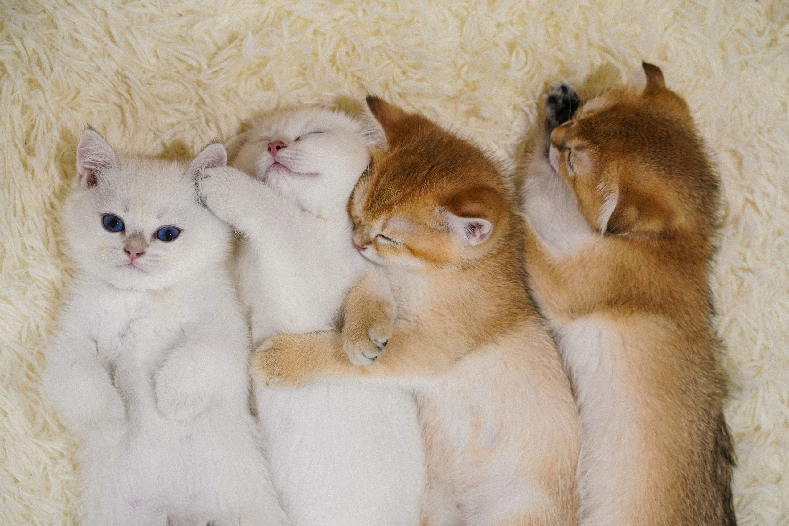

แมวเป็นที่นิยมเลี้ยงในทุกยุคทุกสมัยและทุกที่บนโลก ทุกปีในประเทศญี่ปุ่นจะมีวันแห่งแมว ซึ่งเป็นวันที่ชาวญี่ปุ่นทำการเฉลิมฉลองกับเจ้าเหมียวอย่างหรรษา ที่มาของวันดังกล่าวมาจากเสียงร้องของเจ้าเหมียวที่ไปพ้องเสียงกับเลข 2 ในภาษาญี่ปุ่น ดังนั้นทุกวันที่ 22 เดือน 2 จึงกลายเป็นวันของแมวไปโดยปริยาย
นอกจากนี้กองทุนเพื่อสวัสดิการสัตว์ระหว่างประเทศ หรือ IFAW ก็ยังกำหนดให้วันที่ 8 สิงหาคมของทุกปีเป็นวันแมวโลก โดยมีวัตถุประสงค์เพื่อให้ประชาชนและผู้เลี้ยงแมวทั่วโลกคำนึงถึงสวัสดิภาพของแมว เห็นแล้วใช่ไหมว่าเจ้าแมวนั้นมีอิทธิพลกับมนุษย์โลกขนาดไหน
คริสโตเฟอร์ ฮิตเชนส์ นักเขียนลูกครึ่งอังกฤษ-อเมริกัน กล่าวว่า “เจ้าของสุนัขจะรู้ว่าถ้าคุณให้อาหาร น้ำ ที่พักพิง และความรักแก่สุนัข สุนัขจะคิดว่าคุณคือพระเจ้า แต่สำหรับเจ้าของแมวก็จะตระหนักว่าถ้าคุณให้อาหาร น้ำ ที่พักพิง และความรักแก่แมว แมวจะสรุปว่าพวกมันคือพระเจ้า” นี่อาจเป็นที่มาของคำว่า “ทาสแมว”